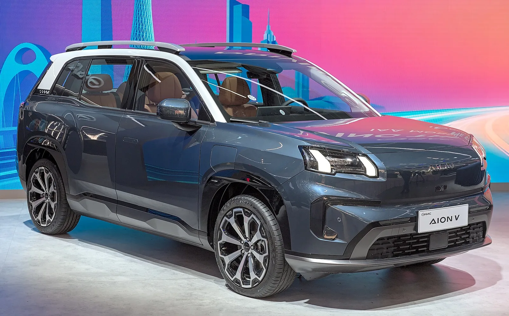
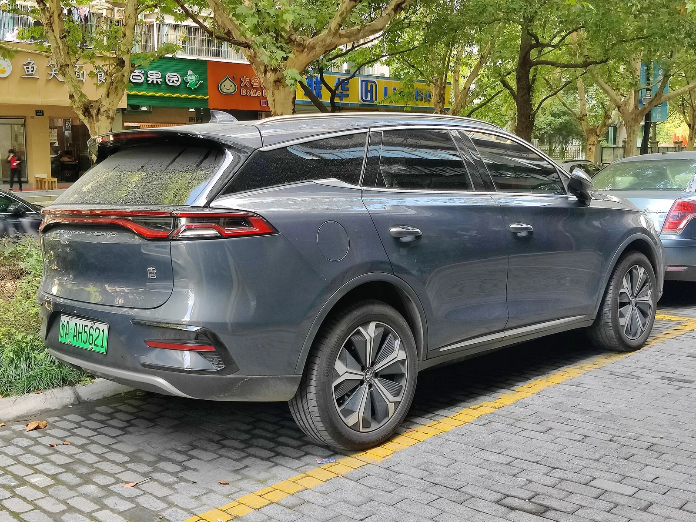
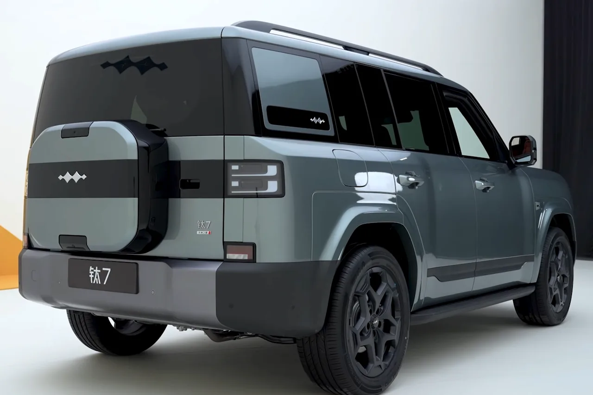

▲ BYD 탕 계열. 3세대 탕이 8월 21일 청두에서 공개된다 ⓒ Wikimedia Commons
2026 청두 오토쇼가 8월 21일 문을 엽니다.
같은 날 여러 개가 한꺼번에 나옵니다. BYD 3세대 탕, 팡청바오 타이 9, GAC 아이온 레이 7이 나란히 데뷔하고, 베이징현대는 아이오닉 V 사전계약을 시작합니다.
국내 시장과 직접 이어지는 이름도 섞여 있습니다.
1. BYD 3세대 탕 — 5분 충전
| 차체 | 전장 5,045 × 전폭 1,980 × 전고 1,760mm, 휠베이스 2,950mm |
|---|---|
| 좌석 | 5인승 |
| 파워트레인 | 영구자석 동기 모터, 최고 300kW(402마력) — 순수전기 |
| 배터리 | 88.682kWh → 730km / 105.792kWh → 830km·850km (CLTC) |
| 충전 | 10→70% 약 5분 (플래시 차징) |
| 기타 | 2세대 블레이드 배터리, 갓즈아이 B 주행보조 기본, DiSus-A 듀얼챔버 에어서스펜션 |
| 출시 | 2026년 하반기 (구체 일정 미정), 가격 미공개 |
탕은 원래 DM-i 플러그인 하이브리드로 알려진 이름입니다. 3세대는 순수전기로 나옵니다. 그리고 좌석이 5인승입니다. 전장 5,045mm의 대형 SUV에서 3열을 빼고 5인승으로 간 선택입니다.
가장 눈에 띄는 항목은 5분 충전입니다. 10%에서 70%까지 약 5분입니다. 다만 이 수치는 전용 초급속 충전기와 적정 온도 조건을 전제로 합니다. 일반 급속충전기에서는 나오지 않는 숫자입니다.
2. 팡청바오 타이 9 — 브랜드 최대 차체
| 차체 | 전장 5,270 × 전폭 1,999 × 전고 1,880mm(루프랙 제외 1,850mm), 휠베이스 3,130mm |
|---|---|
| 좌석 | 6인승 |
| 파워트레인 | 1.5리터 엔진 + 전·후 모터 각 200kW, 사륜구동 PHEV |
| 배터리 | LFP 66.48kWh |
| 순수전기 주행 | 310km |
| 최고속도 | 220km/h |
| 플랫폼 | BYD의 새 DMS 플랫폼 |
전장 5,270mm는 팡청바오 브랜드 최대입니다. 휠베이스 3,130mm에 6인승 구성이라 3열 거주성에 무게를 뒀습니다.
포지션이 흥미롭습니다. 팡청바오에는 오프로드 성향의 '바오' 시리즈와 도심형 '타이' 시리즈가 있습니다. 타이 9은 그 사이를 메우는 자리에 놓입니다. 브랜드 평균 실거래가는 22만3,000위안(약 3만2,840달러) 이상으로 알려져 있습니다.

▲ 팡청바오의 기존 모델. 타이 9은 이 라인업의 최상단에 놓인다
3. GAC 아이온 레이 7 — 화웨이가 모터를 댄다
| 차체 | 전장 4,960 × 전폭 1,900 × 전고 1,455mm, 휠베이스 2,920mm, 5인승 세단 |
|---|---|
| 모터 | 화웨이 공급, 최고 180kW(241마력) — 화웨이 드라이브ONE 통합 구동 시스템 |
| 제동 | 화웨이 EMB 완전 전자식 브레이크, 100km/h→0 제동거리 33m |
| 전비·주행거리 | 9.7kWh/100km, CLTC 700km |
| 배터리 | CATL, 매거진 배터리 2.0 |
| 공력 | 공기저항계수 0.22 (14개 항목 최적화) |
| 센서 | 27개 차량용 센서 — 화웨이 192채널 라이다, 4D 밀리미터파 레이더 3개 |
| 예상가 | 20만~25만 위안 (2만9,500~3만6,850달러) |
레이 7은 아이온의 새 '레이' 시리즈 첫 모델이며, 새 로고를 처음 다는 차입니다. 젊은 층을 겨냥한 브랜드 리프레시입니다.
주목할 점은 화웨이 의존도입니다. 모터, 통합 구동 시스템, 전자식 브레이크, 라이다까지 화웨이 부품이 들어갑니다. 완성차 업체가 핵심 구동계를 외부에서 통째로 받아오는 구성이 중국에서 확산되고 있습니다.

▲ GAC 아이온 V. 레이 7은 아이온의 새 시리즈이자 새 로고를 다는 첫 모델이다
4. 아이오닉 V — 현대차가 중국에 거는 것
| 차체 | 전장 4,900mm, 휠베이스 2,900mm — 중형 패스트백 |
|---|---|
| 배터리 | 66.8kWh, CATL LFP |
| 모터 | 168kW |
| 주행거리 | 중국 기준 약 620km |
| 시스템 | 800V 고전압 |
| 실내 | 27인치 듀얼 디스플레이, 헤드업 디스플레이 |
| 주행보조 | 모멘타 개발 |
| 가격 | 20만~25만 위안 (약 4,000만~5,000만 원) |
| 사전계약 | 8월 21일 청두 오토쇼에서 개시 |
아이오닉 V는 중국 전용입니다. 현재로서는 해외 판매 계획이 없습니다.
배경에는 실적 부진이 있습니다. 현대차의 중국 판매는 2026년 7월 전년 대비 46.8% 감소했습니다. 경쟁 상대로는 샤오펑 모나 M03, MG 07이 지목됩니다.
배터리는 CATL LFP, 주행보조는 모멘타입니다. 중국 시장에서 통하는 조합을 그대로 받아들인 구성입니다.
5. 네 대에서 보이는 공통점
| 모델 | 형식 | 주행거리 | 주행보조 | 배터리 |
|---|---|---|---|---|
| BYD 3세대 탕 | 전기 SUV | 최대 850km | 갓즈아이 B(자체) | 블레이드(자체) |
| 팡청바오 타이 9 | PHEV SUV | 전기 310km | — | LFP(자체) |
| GAC 아이온 레이 7 | 전기 세단 | 700km | 화웨이 | CATL |
| 현대 아이오닉 V | 전기 패스트백 | 약 620km | 모멘타 | CATL |
두 갈래가 뚜렷합니다. BYD는 배터리부터 주행보조까지 자체 조달로 가고, GAC와 현대차는 화웨이·모멘타·CATL이라는 외부 공급망에 올라탑니다.
충전 속도가 새 경쟁축이 됐다는 점도 공통됩니다. 탕의 5분 충전이 대표적입니다. 주행거리 경쟁이 700~850km 선에서 포화되면서, 승부처가 얼마나 오래 가느냐에서 얼마나 빨리 채우느냐로 옮겨가고 있습니다.

▲ 기존 탕 EV. 3세대는 5인승 순수전기로 성격이 바뀐다

▲ 팡청바오는 오프로드형 바오 시리즈와 도심형 타이 시리즈로 나뉜다
6. 정리
2026 청두 오토쇼가 8월 21일 개막합니다.
BYD 3세대 탕은 5인승 순수전기 SUV로 최대 850km(CLTC), 10→70% 약 5분 충전을 내걸었습니다. 팡청바오 타이 9은 전장 5,270mm에 휠베이스 3,130mm인 6인승 PHEV로, 브랜드 최대 차체입니다. GAC 아이온 레이 7은 화웨이 모터·라이다·전자식 브레이크를 얹고 CLTC 700km, 공력계수 0.22를 기록했습니다.
베이징현대는 이날 아이오닉 V 사전계약을 시작합니다. 66.8kWh CATL LFP, 168kW, 약 620km, 20만~25만 위안입니다. 중국 전용 모델이며 해외 판매 계획은 없습니다.